Ideally, an image taked by a CCD camera through a telescope will give accurate information about the light flux distribution over a portion of the sky. Unfortunately, this is not generally the case. Instrument imperfections and the discrete nature of light itself concur to introduce errors in the measured data. The errors (differences between the measured values and the ``true'' ones) are the result of several factors, some random in nature, and some deteministic.
The goal of the CCD reduction process is to eliminate (or at least minimise) the contribution of deterministic factors in the errors, in other words to remove the instrument signature from the data.
A second, but not less important, goal is to preserve information about the noise sources, so that users of the reduced data can evaluate the random errors of the data.
We begin this chapter by describing the way the general CCD reduction process works, and in the process define bias, dark and flat files. The second part of the chapter is devoted to the practical implementation of the reduction tasks in the program.
To estimate the flux values reaching the sensor from the raw frame, we need to
estimate 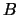,  and 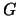. After that, Equation 6.1 can be solved for 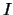.
,
and 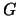. After that, Equation 6.1 can be solved for 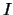.
,  and are calculated starting from calibration frames taken
under controlled conditions:
bias, dark and flat frames.
and are calculated starting from calibration frames taken
under controlled conditions:
bias, dark and flat frames.
If we take very short exposures without opening the camera's shutter (bias frames
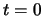 and 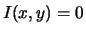; Equation (6.1) becomes:
| 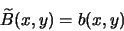 | (6.3) |
 |
(6.4) |
| 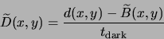 | (6.6) |
| 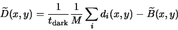 | (6.7) |
| 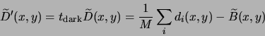 | (6.8) |
If we have a data frame with an integration time of 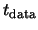, the first two
terms in (6.1) are estimated by the master dark frame
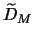:
If we use our estimated  and 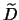 to reduce a data frame with
an integration time of , the bias and dark subtraction will contribute a
noise level of:6.2
and 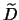 to reduce a data frame with
an integration time of , the bias and dark subtraction will contribute a
noise level of:6.2
We generally want to keep the square root in (6.10) between 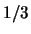 and 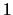. A value lower than will provide a negligible improvement in the overall signal/noise ratio, while for values larger than 1, this term will dominate the camera read noise and become significant.
| 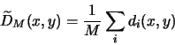 | (6.11) |
In general, people using large telescopes and 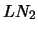 cooled cameras preffer using bias frames, as they require less time than dark frames; The dark current of these cameras is very low and stable, and a single set of darks can be used to reduce many observations. Users of thermoelectrically-cooled cameras, which have more significant dark currents, are more likely to use dark frames exclussively.
With and  out of the way, we need a way to estimate in (6.1) before we can
recover the incident flux. To do this, we apply a flat-field (even)
illumination to
the camera6.3and acquire several flat-field frames
out of the way, we need a way to estimate in (6.1) before we can
recover the incident flux. To do this, we apply a flat-field (even)
illumination to
the camera6.3and acquire several flat-field frames
| 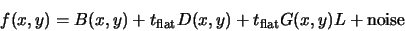 | (6.13) |
We then calculate a master dark frame for the flat fields 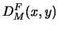 and subtract it from the
flats, obtaining:
| (6.16) |
We have obtained an estimate of the incident light flux up to a constant ( 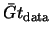) which represents the average sensitivity of the camera multiplied by the integration time, which is the best we can do without a reference source calibrated in absolute units.
Earlier in this chapter we mentioned that it is useful in many cases to ``average'' several frames in order to reduce the noise. It turns out that while arithmetic averaging does indeed reduce the resulting noise, it doesn't go very far in removing the effect of devinat values that are far from the mean. When combining CCD frames, the most common causes of deviant values are cosmic ray hits on all frames and unwanted star images on sky flats.
When combining  CCD frames, we start with
CCD frames, we start with  values for each pixel and want to arrive
at a combined pixel value that uses as much as possible of the available information (so that
we obtain the maximum noise reduction), while rejecting any values that are affected by artifacts.
GCX implements four combining methods, described below.
values for each pixel and want to arrive
at a combined pixel value that uses as much as possible of the available information (so that
we obtain the maximum noise reduction), while rejecting any values that are affected by artifacts.
GCX implements four combining methods, described below.
The deviant value rejection of averaging is only modest; deviant values are reduced by a factor
of  . For this reason, it is recommended that averaging only be used when we know that deviant
values are not present (for example, when combining frames for which the outlier rejection has
already been done).
. For this reason, it is recommended that averaging only be used when we know that deviant
values are not present (for example, when combining frames for which the outlier rejection has
already been done).
On the down side, the median's statistical efficiency for Gaussian distributed values is only 0.65 of average's. Also, when combining integer values, the median does nothing to smooth out the quantisation effects; the median of any number of integer values is also an integer.
Mean-median is a variant of the median method intended to improve the statistical efficiency of the median, and get around the quantisation problem. In the mean-median method, we compute the standard deviation of the pixel values around the median, and discard all the values than are farther away than a specified number of standard deviations (usually 1.5 or 2). The remaining values are averaged together.
Mean-median is fast, and works well for large sets. With small sets, the fact that the deviant pixels increase the calculated standard deviation limits it's efficiency. It requires all frames to have the same intensity scale.
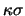-clipping is the most ellaborate combining method provided by GCX . It starts by calculating the median and the standard deviation around it. The values with large deviations relative to the standard deviation are excluded. Then, the mean and standard deviation of the remaining values are computed. Again, the values that are away for the mean are excluded, and the process is repeated until there is no change in the mean or the iteration limit is reached.
-clipping is very effective at removing cosmic rays and star images from sky flats, even with a reduced number of frames. It is also capable of removing all the star images from a number of frames of different fields, leaving only the sky background, which makes it possible to create a flat frame from the regular data frames (see below for super-flat).
-clipping is the most computationally-intensive method of frame combining. It requires all frames to have the same intensity scale.
Like most tasks in GCX CCD Reductions can be performed either interactively or using the command-line interface. We'll discuss the interactive way first.
To open up the CCD reduction dialog, select Processing/CCD Reduction or press L. In the Image Files tab, click on Add and in the file selector select any number of files and click Ok. The selected files will appear in the file list.
To display any of the frames in the list, click on it (it will become selected) and then click Display. The image will show in the main window. The loaded files can be viewed in sequence by clicking next or pressing N repeteadly. If for some reson we want to exclude a frame from being processed, clicking on Skip or pressing S will mark it to be skipped.
Skipped frames appear in the list with their names enclosed in square brackets. If we want to remove the skip mark, clicking Unskip while the frames are selected will accomplish that. Note that all reduction operations apply to all the frames in the file list that don't have the skip mark, regardless of which are selected.
Whenever a frame is selected, a status line at the bottom of the dialog shows the file's name and any operations already performed on it.6.5
To revert some frames to their original status, select them and click on Reload. Frames can be completely removed from the list by selecting them and the clicking on Remove.
We will create a master bias frame by stacking several bias frames. If we preffer to work without bias frames, we can use the same procedure to create a master dark frame. First clear the file list (Select all then Remove) and add the bias frames to be stacked to the list.
Then, in the CCD Reduction tab, check that all the ``enable'' ticks are off (we don't want to apply any operation to the bias frames). Same for the Aligment tab.
In the Stacking tab, select the desired parameters for the stacking operation (the method and method parameters). A good initial setting is kappa_sigma, 1.5 sigmas and an iteration limit of 4. Set background matching to Off, and check ``Enable stacking''.
Finally, in the Run tab type in a file name6.66.7 (for example ``master_bias'') and click Run. The progress of the stacking operation can be followed in the text window. After stacking is complete, the resulting frame is shown in the main window.
Suppose now that we have a number of dark frames taken with the same integration time and we want to create a bias subtracted master dark frame from them. We'll use the master bias frame we just created.
Like above, clear the frame list and load the dark frames. Then, in the CCD Reduction tab enter the name of the master bias frame we just created (or click on the ``...'' button and select it in the file selector). The ``enable'' mark for bias subtraction should be on.
Then make sure that stacking is still enabled, enter an output file name and click on Run. The program will subtract the master bias frame from each of the dark frames, and then combine the results. As before, the result will be shown in the main window.
Sometimes we need to scale the bias-subtracted dark frame, so it can be used to reduce data frames taken with a different integration time. We can also do that now. Suppose our dark frames used 60 seconds on integration time, and we want to reduce 30-seconds data frames. We will need out bias-subtracted master dark to be scaled by a factor of 0.5. In the CCD Reduction tab check the ``multiply enable'' box and enter 0.5 in the multiply entry. Then click on Run again,6.8of course not before changing the output file name into something meaningful, like ``bmdark-30'' or something similar.
To create a master frame, we need either a master dark frame of suitable integration time for the flats, or a master bias and suitably scaled bias-subtracted master dark frame.
Clear the file list and add the flat frames to it. In the CCD Reduction tab, set the bias and dark frame file names,6.9 and make sure their ``enable'' boxes are checked. Go to the Stacking tab and enable stacking, set your algorithm and parameters. Except if you are very sure that the flat frames have the same intensity (such as when using a known stable light box), enable multiplicative background matching. Finally, select an output file name, and run the flat generation.
We probably want to multiply the frames by a constant to make sure the relatively low level flat resulting is not affected by quatisation when the frame is saved in an integer format.
Reducing the data frames should is easy now; load them into the file list, specify the bias, dark and flat to be used, select an output directory name and click on Run.
GCX will never overwrite the original frames, so we will need to create a second set of reduced files. However, unless we have some use for the reduces frames, we can avoid saving them and just run the reduction every time we use the frames. For instance, we can align and stack the frame, or run aperture photometry on the reduced frames by just specifying the bias/dark/flats together with the required operation.
When combining data frames, it is often required that they are aligned before their values are combined. GCX contains an automatic alignment algorithm that works well with frames taken with the same setup (for instance multiple exposures). In the current version, the alignment routine only performs image translations (it does not rotate or scale the images).6.10
To align frames, they need to be in the file list. Then, in the Alignment tab select an alignment frame file name. This is the frame used as a reference--all others will be shifted to match this one. Clicking the Show Alignment Stars button will detect suitable stars from the alignment frame and display them in the main window.6.11
Clicking on Run will perform the actual alignment. Stars are detected from each frame, and their position matched to the reference frame.6.12 The frame will then be translated the appropiate amount. It is also possible to apply a gaussian smoothing filter here. Usually small FWHMs work best (0.1-0.5 pixels).
After the frames are aligned, we can use the Display and Next buttons in the file list tab to browse the aligned files. Stars should show well centered inside the alignment star markings. This is also a good time to exclude any bad frames (such as frames with tracking problems).
When satisfied with the aligned frames, we can stack them and produce a final image. Just enable the stack check box and click on Run again.
All CCD reduction operations are also accessible from the command line, which makes it easy to integrate GCX with other applications. The command-line options are described by calling
gcx -helpHere we'll provide some examples of use. Let's assume that we have a number of 20-second data frames, some 20-second dark frames, some 1-sec sky flats, and some bias frames. We want to reduce the data frames and align and stack them together.
First, we check that the stacking method and parameters are properly set in the CCD Reduction Options page or the /.gcxrc file.
We combine the bias frames to create a master bias file (m-bias.fits):
gcx -s -o m-bias bias*Then we combine the dark frames to create the master dark frame for the data frames (m-dark-20.fits):
gcx -s -o m-dark-20 dark*We create a bias-subtracted master dark frame and scale it to be used on the flats (dark-1s.fits):
gcx -b m-bias -s -M 0.05 -o dark-1s dark*And then the master flat frame (m-flat.fits):
gcx -b m-bias -d dark-1s -F -o m-flat flat*Assuming that red is a directory, we reduce all frames and save them there:
gcx -d m-dark-20 -f m-flat -o red data*We align and stack the data files (with a 0.1 pixels FWHM gaussian blur):
gcx -a red/data001 -s -G 0.1 -o stack1 red/data*As an alternative, we align and stack directly from the original files, this time without any blur:
gcx -d m-dark-20 -f m-flat -a data001 -s -o stack1 data*The order of the command-line options is not important. CCD reduction operations are always performed in the order: bias, dark, flat, multiply by a constant, add a constant, align and gaussian blur, stack. If no extension is provided on the file names, GCX will append .fits or .fits.gz automatically on saved image files, and will look for one of .fits or .fit with or without a .gz suffix.